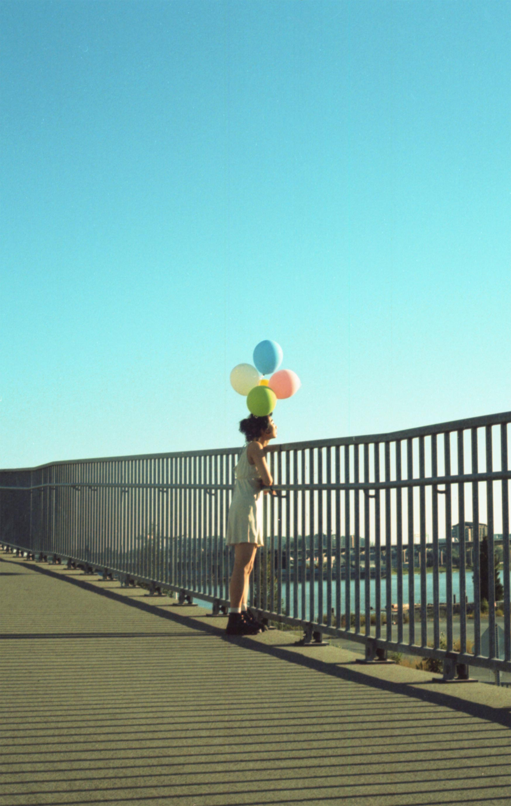

Dec 2020
This is 20 years old Phoebe, writing to you about your life in the Covid-19 era. I know you think that 2020 is going to be the best year of your life, but things that once seemed impossible will become the new mundane.
→ Scroll to read


You’ll be stuck in a whole new kind of everlasting present, it’s like there’s no future.

The world will seem surreal, disoriented, and uncanny. Time will slowly feel distorted. For the first time in so long, you’ll have time to think and process things.

This is when the overthinking kicks in. You’ll begin to wonder why you get to feel so secure behind closed doors, yet still feel utterly hopeless about life. There will be times when you feel like drowning in your regrets of the past. As you self-reflect, that sense of guilt and shame always circles back to you.


But as a new norm starts to settle, you’ll learn to adapt. A number of unforeseen positives will come from this experience. For the first time in your life, you’ll learn about toxic positivity. You’ll realize the importance of allowing yourself to process pain and trauma from the past. Most importantly, you’ll learn to be patient while your heart heals.
As an artist, you’ll truly understand the meaning of having your own timeline. You’ll cherish the opportunity of a break and finally learn to create at your own pace. It is a work in progress but you’ll learn to celebrate small joys and not to be so hard on yourself.
The most precious lesson you’ll learn is to be proud of the person you have become. Through all of this mess, you’ll learn to be proud of the way you fought through your lowest lows, you’ll learn to be proud of how you slowly yet surely healed through the pain, you’ll learn to realize the past doesn’t define the potential the future is holding for you.

At the end of the day, it’s all about learning to love and loving to learn.
2020 will earn a special place in your heart. Towards the end of it, you’ll feel incredibly fortunate to have found peace and joy in things that once felt routine.You’ll be able to understand yourself and your emotions better than you have ever before. Most importantly, you’ll have a broader acceptance that things come as they come.
And finally, pre-pandemic self, you’re resilient, strong, and hopeful. As terrifying as everything will be, you will do the absolute very best you can to live in the present. Sending you lots of love, I’ll see you in the future.
Phoebe